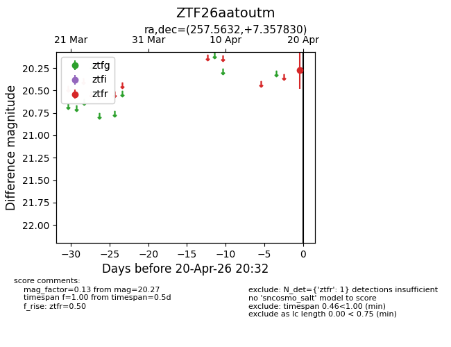
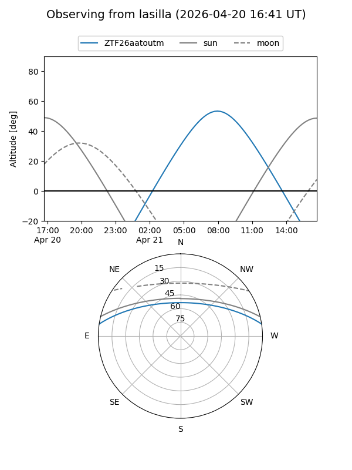
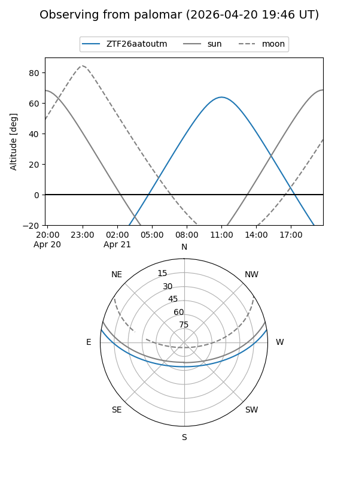

ZTF26aatoutm
Target ZTF26aatoutm at 2026-04-20 20:42
Aliases and brokers:
FINK: link
Lasair: link
ALeRCE: link
alt names
ZTF26aatoutm (ztf,fink_ztf)
Coordinates:
equatorial (ra, dec) = 257.5632,+7.35783
equatorial (HMS+DMS) = 17:10:15.18,+07:21:28.19
galactic (l, b) = (27.8804,+25.82062)
Flags:
Photometry:
last ztfr=20.27
1 ztfr detections
Lightcurve

Visibility


Additional plots